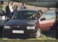
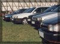

By the time we arrived at the circuit it was about 1pm and nearly everyone had already arrived. It was quite an experience driving past the crowds of people with them looking at a line of eight Tipo 16Vs snaking through them. You could almost imagine them saying "Oh look there's a Fiat Tipo 16V, you don't see one of those very often " followed by "... and there's another, and another...".

Most of the day was spent watching the racing in the middle of the circuit. You could take your own car around if you were prepared to queue. There was a wide variety of cars taking part including a couple of Lamborghini Countachs, various Ferraris, Lancia Integrales. I think I speak for everyone when I say the most fun to watch was an ex rally Metro 6R4, awesome handling and acceleration. Tiff Needell even turned up to watch.
One of the funniest moments must have been where George's friend Richie parked his Alfa 75. Right opposite the main racing event was a company showing off about 4 of their modified Alfas. Richie managed to park his Alfa right in the middle of their display without asking!!!

We had a look around the car parks to try and find any other Tipo 16V but the only one we found turned out to belong to Keith Meredith.
Come 6pm and the light was fading and we all decided to head off home. Alex Wakefield says "It was great to meet everyone who attended today, and I'm looking forwards to the next gathering." Nigel Gladstone says "Chuffin Marvellous day, I must have been driving like a looney, nearly a full tank for just short of 200 miles!! great to see everyone though, excellent turnout!" Keith Meredith says "It was nice to finally meet some of you guys at last, especially those like Alex and John who I have had contact with by email and Andy Forsdyke who I have spoken to on the phone when ordering new badges and strips."